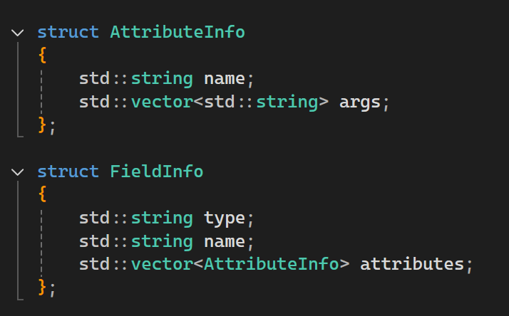
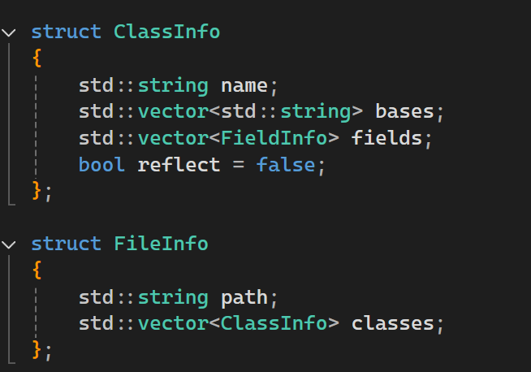

CurryEngine
試して、確かめて、すぐに改善する。
C++ / DirectX11で開発する自作ゲームエンジン。リフレクションによる編集・保存処理の共通化と、C# APIの自動生成に取り組んでいます。
01 基本情報
| 作品ジャンル | ゲームエンジン |
|---|---|
| コンセプト | ラピッドイテレーションを実現するゲームエンジン |
| 制作期間 | 2025年3月 ～ 現在 |
| 制作人数 | 1人（個人制作） |
| 開発環境 | Visual Studio / C++ / C# / DirectX11 |
02 C++自作リフレクション
クラスの情報を一度抽出し、編集UI・保存処理・API生成に活用する。
Unreal Engineのリフレクションを参考に、C++のクラス名・メンバー変数の名前や型・属性を扱う仕組みを自作しました。インスペクタの表示やJSONへの保存処理を、メンバー変数を追加するたびに手書きする作業を減らすことが目的です。
外部パーサー方式を採用した理由
手動で登録用マクロを記述する方式と比較し、コンパイル前にコードを走査する外部パーサー方式を採用しました。パーサー自体の実装は必要ですが、抽出した情報をエディタだけでなく、C#との連携にも再利用できる構成にしています。
- 01 / 入力C++ヘッダー
クラス・変数・属性を定義。マクロを解析の目印にする。
- 02 / 解析メタパーサー
ビルド時に起動し、コードを走査。regexで構文を検知してメタ情報を抽出。
- 03 / 生成reflect.h
収集したメタ情報から、リフレクション用ヘッダーを自動生成。
- 04 / コンパイルエンジンをビルド
生成したヘッダーをインクルードし、通常のコンパイラでビルド。
属性からクラスまでを保持するデータ構造
解析した情報は、ファイル・クラス・フィールド・属性の階層で管理します。属性は名前だけでなく引数も保持し、フィールドの型情報やクラスの継承情報とあわせて扱います。


出典：自身の発表資料「C++で自作リフレクション」p.8。上の図は資料の構造をもとに再構成しています。
メタ情報を利用する側の設計
実装によって減らした作業
対応済みの型では、個々のメンバー変数に対するインスペクタ表示や保存処理を共通の仕組みに任せられます。メタ情報を複数の機能で利用することで、登録や連携コードを手作業で増やす負担を抑えています。
実装で直面した課題と対応（発表時点）
新しい型に対応する際は、インスペクタ表示とシリアライズの型登録が必要でした。シリアライズ側ではマクロにより登録処理を1行にまとめ、未対応の型のUIは必要に応じてImGuiで個別に実装していました。
また、privateメンバーへのアクセスで詰まり、発表時点では対象の変数をpublicにする形で対応していました。自動化の仕組みと、型ごとに追加対応が必要な範囲を分けて実装しています。
発表資料 p.9に記載した課題と対応です。
03 C#スクリプトの内部設計
リフレクションのメタ情報を、言語間の連携にも使う。
メタ情報からエンジンAPIを自動生成
C++リフレクションで得たメタ情報を入力として、C#から利用するエンジンAPIを生成しています。C++パーサーを拡張し、連携に必要なバインディングコードも生成することで、手動でラッパーコードを記述する作業を減らしました。
- C++のメタ情報
リフレクション用に抽出した情報を再利用
- API・バインディング生成
エンジンとの連携に必要なコードを自動生成
- C#エンジンAPI
ゲームロジックからエンジンの機能を利用
プロパティデータはJSON文字列でやり取り
C++側とC#側の間では、プロパティのデータをJSON文字列で受け渡しています。APIを生成する工程と、実行時にプロパティ値をやり取りする経路を組み合わせて、エディタとスクリプトを連携させています。
CoreCLRとホットリロードによる反復開発
エンジンはC++、変更頻度の高いゲームロジックはC#で記述します。.NET CoreCLRを組み込み、アセンブリを再読み込みすることで、エンジンを再起動せずにコードの変更を反映できるようにしました。
ビルド待ちの短縮と、連携コードの保守
ゲームロジックのビルド時間を数分から数秒に短縮しました。さらに、メタ情報からのAPI生成によって手動のラッパー実装を減らし、エンジンの機能追加とスクリプト側の連携を効率化しています。
スクリプト機能のデモと実装内容

- エディタとの連携スクリプトの追加や設定、動作確認をエディタと連携して行えます。
- 変更の反映動画ではC#のホットリロード、GIFではスクリプト機能の動作を紹介しています。
04 アセットのメタ情報管理
アセットに付随する情報を、メタファイルに記録する。
アセットのメタファイルには、GUID・アセット種別・インポート設定・ファイルパスを記録しています。アセット本体とは別に、識別情報や読み込み時の設定をまとめて管理する構成にしました。
メタファイルに記録する情報
- GUID
- アセットを識別するためのID。
- アセット種別
- アセットがどの種類のデータかを示す情報。
- インポート設定
- アセットを取り込む際に使用する設定。
- ファイルパス
- アセットのファイルが存在する場所。
05 目標とこだわり
アイデアを素早く試し、改善を繰り返せる開発環境をつくる。
ゲーム開発では、変更のたびに発生するビルドや再起動が、試行錯誤の妨げになります。CurryEngineでは、変更をすぐに確認できる仕組みと各種エディタを実装し、ゲーム制作の効率向上に取り組んでいます。
06 機能の全体像
C++のエンジンを基盤に、C#によるゲームロジックと、制作を支える編集機能を組み合わせています。
各機能の役割をまとめた図です。ランタイムとエディタの分離は、今後の開発項目としています。
07 各種エディタ・物理演算
実装の目的、仕組み、改善につながった点を、デモとあわせて紹介します。
レベルエディタ
配置からパラメータ調整まで、画面上で編集。

- 目的オブジェクトを視覚的に配置・編集できるようにするため、レベルエディタを実装しました。
- 実装オブジェクトの配置・移動・回転・スケーリングに加え、Inspectorからコンポーネントの追加やパラメータの編集ができます。
- 工夫Undo/Redoや複数選択など、レベル制作で頻繁に使用する機能を実装しました。
- 今後今後は、特定のゲームに合わせた専用ツールを開発し、レベル設計からゲームプレイの調整までを効率的に行える環境を目指します。
シェーダーエディタ
コードの変更を、再起動せず描画に反映。

- 目的ゲームの見た目を効率的に調整できるよう、シェーダーエディタを実装しました。
- 実装エディタ上でテクスチャの変更やシェーダーパラメータの編集を行い、描画結果をリアルタイムに確認できます。
- 工夫シェーダーのホットリロードに対応しており、コードの変更をエンジンの再起動なしで反映できます。
- 今後今後はマテリアルエディタへ発展させ、マテリアルの管理機能やノードベースでの編集にも対応する予定です。
PhysXを用いた物理演算
物理特性や当たり判定をコンポーネントで設定。

- 目的ゲーム内で物理挙動や衝突判定を実現するため、物理エンジンのPhysXを導入しました。
- 採用理由Unityでも採用されている実績があり、使い慣れたワークフローを参考にできることから採用しました。
- 実装Rigidbodyや各種Colliderをコンポーネントとして実装し、エディタ上で物理特性や当たり判定を設定できるようにしました。
- 今後今後はジョイント機能などにも対応し、より幅広い物理表現を実現する予定です。
エフェクトエディタ
演出をその場で調整し、チームの制作にも活用。
- 目的ゲーム内の演出を効率的に制作・調整するため、エフェクトエディタを実装しました。
- 実装エフェクトのパラメータをリアルタイムに編集でき、設定内容をJSON形式で保存・読み込みできます。
- 制作での活用チーム制作で実際に使用してもらい、メンバーからのフィードバックをもとに操作性や機能の改善に取り組んでいます。
- 今後今後はカーブエディタの追加や、ヒエラルキーとの操作性の統一を進め、より直感的にエフェクトを制作できる環境を目指します。
アニメーションエディタ
キャラクターのアニメーションを視覚的に編集。
- 目的アニメーションエディタを実装し、キャラクターのアニメーションを視覚的に編集できる環境を提供しました。
08 今後の開発
ラピッドイテレーションをさらに追求し、汎用ゲームエンジンとしての完成度を高めるため、以下の機能の実装・改善に取り組んでいきます。
- ランタイムとエディタの分離による保守性・拡張性の向上
- アセットの非同期ロードや管理機能の改善による操作性の向上
- C#スクリプティングの安定性向上とホットリロード機能の改善
- マテリアルシステムの拡張による描画表現の自由度向上